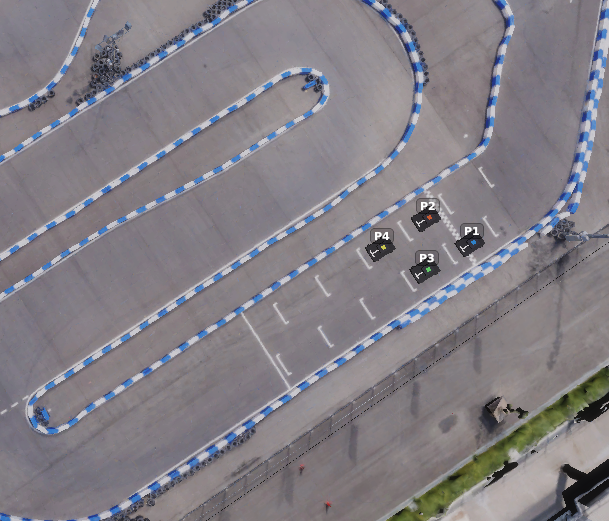

SIM 決勝 PC 環境説明
このページでは、9月19日に開催する SIM 決勝の PC 環境についてまとめています。セットアップ手順・操作方法を説明します。
WIP
一部手順はまだ未定であり、今後更新される可能性があります。
このページの読み方
チームの部門・使用する PC によって、読むべき節が異なります。以下の早見表で自分が読む節を確認してください。
| あなたのチーム | 読む節 |
|---|---|
| Sim to Real 部門・運営が用意した PC を使う | 運営が用意する Autoware PC の使い方 → Autoware の実行方法 |
| Sim to Real 部門・持ち込み PC を使う | 持参 PC の設定 → Autoware の実行方法 |
| End to End 部門（全チーム持ち込み） | 持参 PC の設定 → Autoware の実行方法 |
概要
会場に用意されている機材
- Sim to Real 部門の SIM 決勝
- 各チームの席に AC 電源タップ、モニター、キーボード、マウス、LAN ケーブル、Autoware 用 PC が配置されています
- Autoware の実行には運営が用意する PC を使用します。持参 PC の使用を希望するチームは、持参 PC も使用できます
- End to End 部門の SIM 決勝
- 各チームの席に AC 電源タップ、モニター、キーボード、マウス、LAN ケーブルが配置されています
- Autoware の実行には参加チーム持参 PC を使用します
各 PC の役割
- SIM 決勝は以下の2種類の PC を合計5台接続して行われます
- AWSIM PC：AWSIM シミュレータを実行する PC です。運営が用意します。
- Autoware PC：Autoware のみを単体実行する PC です。参加チームは本 PC を操作します。
- AWSIM PC x 1台と Autoware PC x 4台をローカルネットワークで接続します。
- 開発時に使用された
make devとは異なり、Autoware PC 上で AWSIM は実行されません。
ネットワーク構成
- スイッチング Hub を中心に、AWSIM PC と 4 台の Autoware PC を有線 LAN で接続します。有線 LAN 側は
192.168.10.0/24のネットワークです。 - インターネット へは AWSIM PC の WiFi 経由で接続します。
graph LR
INTERNET([インターネット])
AWSIM["AWSIM PC<br/>192.168.10.1"]
HUB{{"スイッチングHub<br/>192.168.10.0/24"}}
INTERNET -. WiFi .- AWSIM
AWSIM --- HUB
HUB --- AW1["Autoware PC 1<br/>192.168.10.11"]
HUB --- AW2["Autoware PC 2<br/>192.168.10.12"]
HUB --- AW3["Autoware PC 3<br/>192.168.10.13"]
HUB --- AW4["Autoware PC 4<br/>192.168.10.14"]各 Autoware PC の IP アドレス・ROS_DOMAIN_ID・出走位置の対応は以下の通りです。出走位置 N のチームは Autoware PC N を使用します。
| 出走位置 | PC | IP アドレス | ROS_DOMAIN_ID |
|---|---|---|---|
| - | AWSIM PC | 192.168.10.1 |
- |
| 1 | Autoware PC 1 | 192.168.10.11 |
1 |
| 2 | Autoware PC 2 | 192.168.10.12 |
2 |
| 3 | Autoware PC 3 | 192.168.10.13 |
3 |
| 4 | Autoware PC 4 | 192.168.10.14 |
4 |
AWSIM設定について
- シミュレータ（AWSIM）は、運営が用意するAWSIM PCで実行されます。参加者がAWSIM画面を操作することは出来ません。
- 走行開始位置は以下のとおりです。下記の実行コマンド相当の処理によって、運営側で起動・操作します。
- Sim to Real部門：
make simulator-s2r-final - End to End部門：
make simulator-e2e-final
- Sim to Real部門：

運営が用意する Autoware PC の使い方
本手順の対象
- 対象：Sim to Real 部門で運営が用意した Autoware PC を使うチーム
- 対象外：Sim to Real 部門で持ち込み PC を使うチーム、および End to End 部門の全参加チーム（本手順はスキップしてください）
運営が用意する Autoware PC は、ログイン済みの通常の Ubuntu 22.04 PC としてお渡しします。以下の点にご留意ください。
- PC のスペック：仕様/ハードウェア をご確認ください。
- sudo 権限が必要な操作：apt コマンドによるインストールなど sudo 権限が必要な操作を行う場合は、運営スタッフにお声がけください。
- ソースコードの配置：
~/aichallenge-racingkartに、最新の main ブランチの AI チャレンジリポジトリが配置されています。- この場でのソースコード変更は原則禁止です。ソースコードの取得方法は後述の手順を参照してください。
- 作業用ファイルの作成：スクリプトなど作業用ファイルが必要な場合は、
~/temp/配下にチーム名がわかるフォルダ（例：~/temp/team_ooo）を各自作成し、その中で作業してください。
持参 PC から SSH 接続する方法
Autoware の実行は運営が用意する Autoware PC で行いますが、コマンド操作などを使い慣れた持参 PC で行いたい場合は、運営が用意する PC へ SSH 接続できます。設定は自己責任で行ってください。また、必要な機材（LAN ポートと LAN ケーブル）は各自でご用意ください。
-
持参 PC と運営 Autoware PC を LAN ケーブルで接続する
- PC の ⑨ と書いてあるポートに接続します。
-
持参 PC のネットワーク設定（IPv4）を以下のようにする
- 設定後、一度ケーブルを抜き差しします。
項目 設定値 Method Manual（手動） IP アドレス 192.168.50.2Netmask 255.255.255.0その他 空欄（または Automatic） -
持参 PC のターミナルから SSH 接続する。ユーザー名とパスワードは運営スタッフにご確認ください。
ssh ユーザー名@192.168.50.1 -
GUI アプリを実行する場合は、事前に以下を実行してください。
export DISPLAY=:1
持参 PC の設定
PC を持参するチームは、当日会場で以下の設定を行う必要があります。設定は大きく 「ネットワーク設定」 と 「ROS 2 の設定」 の 2 段階です（ROS 2 の設定は、CycloneDDS と ROS_DOMAIN_ID の 2 つに分かれます）。
本手順の対象
- 対象：Sim to Real 部門で持ち込み PC を使うチーム、および End to End 部門の全参加チーム
- 対象外：Sim to Real 部門で運営が用意した Autoware PC を使うチーム（本手順はスキップしてください）
AI チャレンジリポジトリの更新のお願い
~/aichallenge-racingkart を、main ブランチの9月18日時点での最新状態にしておいてください。また、Docker イメージの再ビルドを行っておいてください。
参加者が用意する機材
- Autoware 実行用 PC
- ノート PC / デスクトップ PC いずれも可
- Ubuntu 22.04 推奨（本ドキュメントは Ubuntu 22.04 を前提にネットワーク設定を記載します。それ以外の環境では、本ドキュメントを参考に各自で設定方法を確認・実施してください）
- PC を起動するために必要な機材一式（会場で用意されている機材は除く）
- 有線 LAN に接続する手段（LAN ポート、USB-LAN 変換アダプタなど）
ネットワーク設定
固定 IP を割り当てて、有線 LAN 経由でインターネットへ接続できる状態にします。
設定する IP アドレス
チーム席（出走位置）に応じて、192.168.10.11〜192.168.10.14 のいずれかを設定します。出走位置と IP アドレスの対応は、上記 ネットワーク構成 の表を参照してください。
| 項目 | 設定値 |
|---|---|
| Address | 192.168.10.11〜192.168.10.14（出走位置に応じて） |
| Netmask | 255.255.255.0 |
| Gateway | 192.168.10.1 |
設定手順
- LAN ポートのインターフェイス名を確認する
ip aコマンドなどで確認できます。- 以後、コマンド内ではこの名前を
IF_LOCALと表記します。
- 一度 DHCP に設定する
設定 -> Network -> IPv4を開く- IPv4 Method で
Automatic (DHCP)を選ぶ Applyをクリック
- LAN ケーブルを接続する
- チーム席に用意されている LAN ケーブルを、持参 PC の LAN ポートに挿します。
- 固定 IP に設定する
設定 -> Network -> IPv4を開く- IPv4 Method で
Manualを選ぶ - 上記「設定する IP アドレス」の値（Address / Netmask / Gateway）を入力する
Applyをクリック
- LAN ケーブルを一度抜き差しする
-
接続確認を行う
- ターミナルを開き、以下の3つが成功することを確認します。
ping 192.168.10.1 ping 8.8.8.8 ping google.com
トラブルシューティング
ping google.com が失敗する場合（ping 8.8.8.8 は成功する場合など）
インターネット接続が不要な場合は、ping google.com には失敗しても問題ありません。
ターミナルで以下のコマンドを実行してください。IF_LOCAL にはご自身のネットワークデバイス名を設定してください。
IF_LOCAL=enx3c18a059f0d4 # 要変更
NAME_LOCAL=$(nmcli -g GENERAL.CONNECTION dev show "$IF_LOCAL")
echo $NAME_LOCAL
sudo nmcli connection modify "$NAME_LOCAL" ipv4.dns 192.168.10.1 ipv4.dns-search "~."
sudo nmcli connection up "$NAME_LOCAL"
別のネットワークで既にインターネット接続している場合
会場内 WiFi など別のネットワークデバイスで既にインターネットに接続していると、接続に不整合が出ることがあります。その場合は、インターネットに接続しているネットワークデバイスを無効にしてから再度お試しください。
ROS 2 (CycloneDDS) の設定
CycloneDDS が使用するネットワークインターフェイスに、LAN ケーブル接続に使用している LAN ポート（IF_LOCAL）を追加します。下記コマンドによって ~/aichallenge-racingkart/vehicle/cyclonedds.xml に設定したインターフェイスが追記されます。
IF_LOCAL=enx3c18a059f0d4 # 要変更
cd ~/aichallenge-racingkart/
./setup.bash network if $IF_LOCAL
ホスト環境に ROS 2 がインストールされている場合の注意
$CYCLONEDDS_URIで定義される設定ファイルも上書きされます。本大会終了後、設定を元に戻してください。- ホスト環境に ROS 2 がインストールされている場合、接続に問題が発生する可能性があります。
~/.bashrcなどで以下の環境変数が設定されていたら、削除してターミナルを立ち上げ直してください。ROS_DOMAIN_IDROS_LOCALHOST_ONLYRMW_IMPLEMENTATIONCYCLONEDDS_URI
ROS 2 (ROS_DOMAIN_ID) の設定
以下のコマンドで設定ファイル（.env）を開き、チーム席（出走位置）に応じて、ROS_DOMAIN_ID を 1〜4 のいずれかに設定します。出走位置と ROS_DOMAIN_ID の対応は、上記 ネットワーク構成 の表を参照してください。
code ~/aichallenge-racingkart/.env
# 出走位置に応じて設定する
ROS_DOMAIN_ID=1
#ROS_DOMAIN_ID=2
#ROS_DOMAIN_ID=3
#ROS_DOMAIN_ID=4
設定確認のお願い
運営スタッフが各PCの設定を確認させていただくことがあります。その際は運営スタッフの指示に従い、設定の表示操作などをお願いいたします。
ROS 2 の疎通確認
AWSIM PC
ROS_DOMAIN_ID=1 ros2 topic pub -r 1 /chatter std_msgs/msg/String "data: 'Hello World'"
ROS_DOMAIN_ID=2 ros2 topic pub -r 1 /chatter std_msgs/msg/String "data: 'Hello World'"
ROS_DOMAIN_ID=3 ros2 topic pub -r 1 /chatter std_msgs/msg/String "data: 'Hello World'"
ROS_DOMAIN_ID=4 ros2 topic pub -r 1 /chatter std_msgs/msg/String "data: 'Hello World'"
Autoware PC
cd ~/aichallenge-racingkart
make autoware-bash
echo $ROS_DOMAIN_ID
ros2 topic list
Autoware の実行方法
本手順の対象
- 対象：Sim to Real 部門・End to End 部門の全参加チーム
ソースコードのダウンロードとビルド
試合に使用するソースコードをダウンロードし、ビルドします。以下の順に実行してください。 （持参 PC を使用し、既にビルド済みの場合は本手順はスキップ可能です）
- ソースコードをダウンロードする（
make download）- 実行するとユーザー名とパスワードを聞かれます。このログイン情報は必ず覚えておいてください。
- 続いてダウンロードするソースコードを選択します。最新のコードを使用する場合は
1を入力してエンターを押します。 - 注意：本手順は「事前にダウンロード済みソースコードの展開」に変更予定です
- ソースコードを確認する（
code .）- VSCode が開くので、ソースコードが 自チームのもの であることを確認してください。
- 確認後は、負荷低減のため VSCode を閉じることを推奨します。
- ビルドする（
make autoware-build）
cd ~/aichallenge-racingkart
make download
code .
make autoware-build
Autoware の実行コマンド
下記コマンドで Autoware のみ を実行します。AWSIM はネットワーク接続された AWSIM PC で実行されるため、Autoware PC 側では不要です。
- Autoware PC のディスプレイには RViz のみ が表示されます。
- AWSIM の映像は、AWSIM PC に接続された会場ディスプレイ をご確認ください。
cd ~/aichallenge-racingkart
make autoware-simulator
# 終了する場合
make down
自己位置のリセットについて
AWSIM 側の操作によってレースが開始・リセットされると、車両位置は強制的にスタート位置に移動します。この際、自己位置がずれる可能性があります。
そのため、Autoware を再起動するか、RViz 上で Initial Pose Set をクリックして自己位置をリセットしてください。
試合中に許可されている行為
- 自己位置のリセット：RViz 上で
Initial Pose Setをクリックすることで指示できます。 - ros2 コマンドの実行：
make autoware-bashのターミナル内で、自身のROS_DOMAIN_IDに対して ros2 コマンドを実行できます。- 実行前に、必ず運営スタッフへ宣言してください。
-
例えば以下のコマンドを発行できます。
make autoware-bash # 以後、Dockerコンテナ内での操作 # ブースト ros2 topic pub --once /awsim/cmd std_msgs/msg/Float32MultiArray "{data: [1.0]}" ros2 topic pub --once /awsim/cmd std_msgs/msg/Float32MultiArray "{data: [0.0]}" # ギア切り替え ros2 topic pub --once /control/command/gear_cmd autoware_auto_vehicle_msgs/msg/GearCommand "{command: 20}" ros2 topic pub --once /control/command/gear_cmd autoware_auto_vehicle_msgs/msg/GearCommand "{command: 2}"